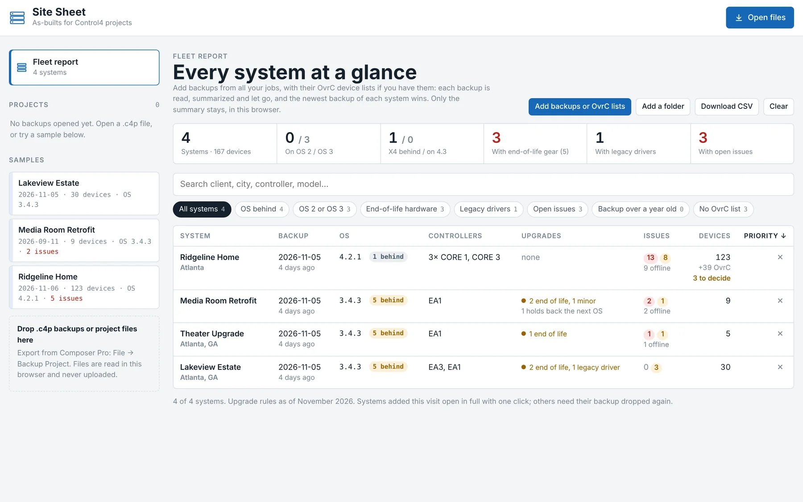
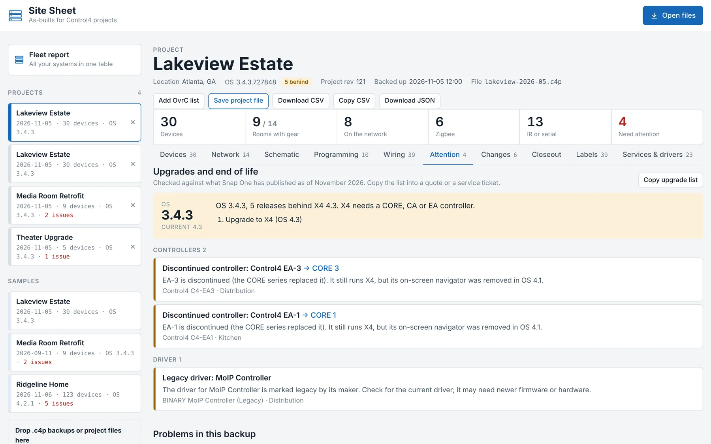
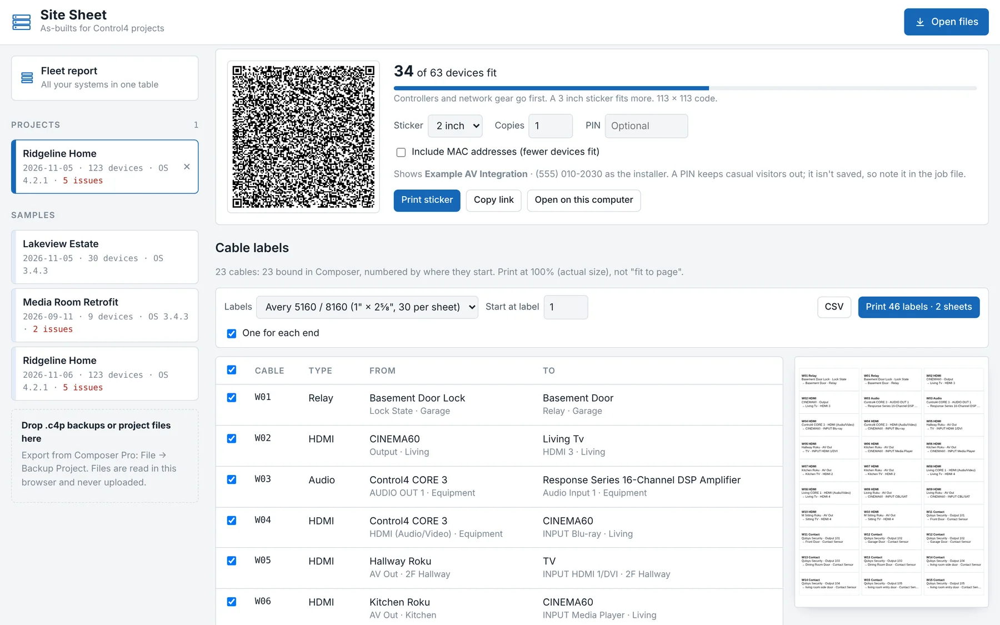
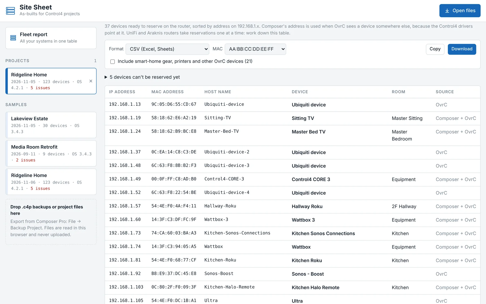
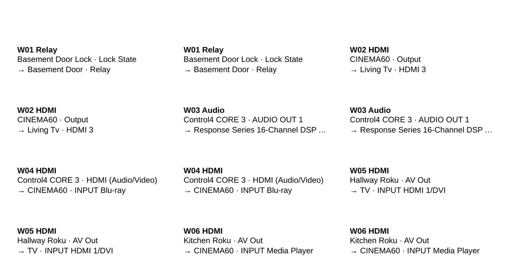
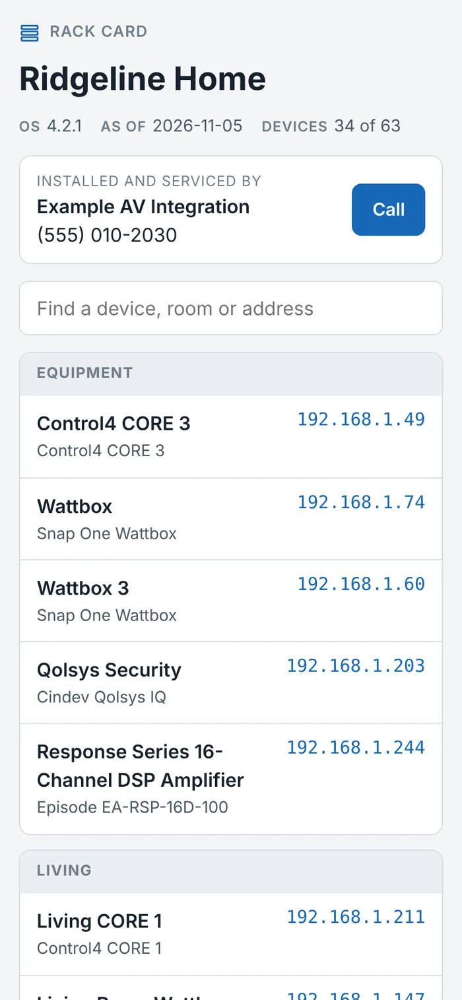

For Control4 dealers and programmers
Open a project backup. Get the as-built.
Site Sheet reads a Composer .c4p file and lays out every device, port and wire in the system: a signal-flow schematic, an inventory by room, the programming, what's broken and what's due for an upgrade, the network merged with OvrC, cable labels, and a closeout packet ready to print. Then it puts every client system in one table.
Free to open and read any job; Pro adds the paperwork. Backups are read on your computer and never uploaded.

A real 29-device project, drawn straight from its backup. Names changed for privacy.
Schematic
The wiring diagram Composer never gives you
Every wired device becomes a block with its real port names: IR OUT 5, RX 3, INPUT CBL/SAT. Blocks are arranged left to right by signal flow, from controllers and sources through switching to receivers and displays.
- IR, serial, HDMI and audio wires in their own colors, each one toggleable
- AV Path Setters and other virtual drivers are skipped, so a wire runs from the source to the input it really feeds
- Drag blocks anywhere. The layout is saved per project
- Export the drawing as SVG for Visio, Illustrator or a closeout packet

Builder
Draw in what the project doesn't know about
Composer only knows the gear it controls. Add your own blocks for the network switch, patch panel or speakers, then drag from one block to another to run a wire. Name the ports, set the wire type, and it's saved with the project.
On a lighting and IP job with no AV wiring at all, Add all puts every device on the canvas so you can draw the network yourself.

Programming
What every button and event does
The Programming tab reads the project's programming without opening Composer: each event and the lines it runs, nested conditionals included, plus lighting scenes with levels and ramp times, keypad buttons with their behaviors and LED colors, timers, custom buttons and variables.
- Reads the way Composer prints it: When Left KP Button 5 button is pushed, When command 'Red Button' is received, checked line by line against Composer's own printouts
- Keypad buttons, dimmer taps, remote and room commands, timers and scheduled events all named, not left as event numbers
- Pick a device to see every event and scene that touches it

Compare
What changed since the last visit
Open two backups of the same job and the Changes tab lists every difference: devices added or removed, IP and MAC changes, firmware and driver updates, renames and room moves, and every emitter or input that was rebound.
- Always reads oldest to newest, using the time each backup was made
- A port that now feeds something else shows as one rebind, not a remove and an add
- Copy a plain-text summary straight into a service ticket, or download it as CSV

Fleet report
Every client system in one table
Drop in every backup you have, or pick the folder that holds your job folders, and the Fleet report gives you one row per system: OS and how far behind it is, controllers, end-of-life hardware, legacy drivers, open issues and backup age.
- Sorted by what needs attention first, with filters for OS behind, end-of-life gear, legacy drivers and stale backups
- OvrC lists dropped in with the backups are matched to their system by MAC address
- Each backup is summarized and let go, so hundreds of systems fit. Download the table as CSV

Upgrades
What's out of date, and what replaces it
Every project opens with an upgrade review: how many releases the OS is behind and the steps to the current X4, controllers past end of life or discontinued with the CORE that replaces each, hardware the next OS drops (T3 touch screens, Gen 1 and Gen 2 lighting), and drivers their makers mark as legacy.
- Hardware that holds back an upgrade is called out before you quote the OS update
- Copy upgrade list pastes straight into a quote or service ticket
- An optional Upgrade recommendations page for the client's closeout packet

OvrC and the router
Merge OvrC without listing anything twice
Click Add OvrC list on any project and drop in the site's OvrC device export. Devices are matched by MAC, then by IP, each only once: Composer devices pick up their live status and addresses, the switches and access points Composer doesn't know about are added, and anything that could be two devices waits for you to decide.
- Phones and laptops stay out unless you ask for them
- A DHCP reservation list of every IP and MAC pair, with conflicts flagged, ready for the router
- Export as a table to type in, CSV, or config for dnsmasq, pfSense or MikroTik

Labels
Cable labels and a QR code for the rack
The Labels tab numbers every cable, from Composer and from the wires you drew, and prints labels for both ends on Avery 5160 or 5167 sheets, or sends a CSV to a Brother or DYMO label printer.
It also prints a QR sticker for the inside of the rack. Scanning it opens the system's controllers, network gear and IP devices by room on any phone, with tap-to-open addresses and your phone number. There's no app, no account and no database: the list rides inside the QR code itself, and an optional PIN encrypts it.

Inventory
Every device, room by room
Make, model, control method, IP or Zigbee ID, MAC, firmware and driver version for each piece of hardware, grouped by floor and room. Dimmers show their load name, so you see Hall Pendants instead of a row of identical Adaptive Phase Dimmer.
Search by anything (an IP, a MAC, a model number) and filter by category or control type. Export to CSV for Excel or Google Sheets.

Closeout
A finished as-built to hand the client
The Closeout tab builds a print-ready packet from the project: a cover with your company, logo and service contact, a system overview with your notes, the schematic on its own landscape page, then inventory by room, wiring, network, programming, open issues, upgrade recommendations, changes since the last backup, and a sign-off page.
- Pick which sections to include. US Letter or A4
- The schematic prints with the layout you arranged and the wires you added
- Print it, or save it as a PDF for the job folder and the client




Client files stay on your computer
The backup is opened and parsed inside your browser or the desktop app. Nothing is uploaded, there's no account, and no server ever sees a client's name, address or network. To move a job between computers or hand it to another tech, save it as a project file: one file on your computer with your layout, OvrC matches and notes, and an optional password that encrypts all of it. Even the rack sticker carries its list inside the QR code, not on a server.
Pricing
Free to read a job. Pro for the paperwork.
Free
$0
- Devices, network and Zigbee by room
- Schematic and the drawn-in builder
- Programming, wiring and attention list
- Changes between backups, upgrade review
- OvrC and UniFi lists merged in
Pro
$149 a year
- Fleet report across all your clients
- Cable labels and the rack QR sticker
- Closeout packet with your company, logo and contact
- Exports: inventory CSV and JSON, DHCP reservations
- Saved project files
Up to 3 computers. Every Pro feature works on the sample projects, so try it first. Checkout and tax by Stripe; cancel anytime.
Download
A 3 MB Windows app that works offline
Install it from the Microsoft Store: signed by Microsoft, no warnings, and updates arrive on their own. It uses the WebView2 engine built into Windows 10 and 11, saves exports through a normal Save dialog, and runs in the truck with no signal.
Need a single portable file for a USB stick? Download SiteSheet.exe instead. It isn't code-signed, so Windows SmartScreen asks once: choose More info, then Run anyway.
- 1Back up the projectIn Composer Pro: File → Backup Project. Save the .c4p.
- 2Open it in Site SheetDrop one or several backups on the window, with the site's OvrC device list if you have it. Each becomes a project in the list.
- 3Leave the as-built at the rackPrint the closeout packet, label the cables, and stick the QR code inside the rack so the next tech has it on their phone.
